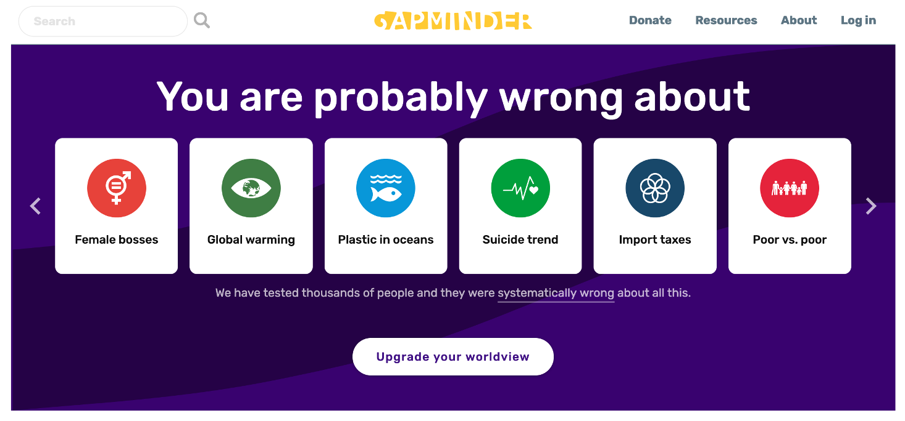

Chapter 5 - Data visualization essentials
Contents
Chapter 5 - Data visualization essentials#

# import libraries
import pandas as pd
import seaborn as sns
import matplotlib.pyplot as plt
# make sure plots show in the notebook
%matplotlib inline
After importing data, you should examine it closely.
Look at the raw data and perform rough checks of your assumptions
Compute summary statistics
Produce visualizations to illustrate obvious - or not so obvious - trends in the data
Plotting with seaborn#
First, a note about matplotlib#
There are many different ways to visualize data in Python but they virtually all rely on matplotlib. You should take some time to read through the tutorial: https://matplotlib.org/stable/tutorials/introductory/pyplot.html.
Because many other libraries depend on matplotlib under the hood, you should familiarize yourself with the basics. For example:
import matplotlib.pyplot as plt
x = [1,2,3,4,5]
y = [2,4,6,8,20]
plt.scatter(x, y)
plt.title('title')
plt.ylabel('some numbers')
plt.xlabel('x-axis label')
plt.show()
Visualization best practices#
Consult Wilke’s Fundamentals of Data Visualization https://clauswilke.com/dataviz/ for discussions of theory and best practices.
The goal of data visualization is to accurately communicate something about the data. This could be an amount, a distribution, relationship, predictions, or the results of sorted data.
Utilize characteristics of different data types to manipulate the aesthetics of plot axes and coordinate systems, color scales and gradients, and formatting and arrangements to impress your audience!
Basic plots#
Histogram: visualize distribution of one (or more) continuous (i.e., integer or float) variable.
Boxplot: visualize the distribution of one (or more) continuous variable.
Scatterplot: visualize the relationship between two continuous variables.
Histogram#
Use a histogram to plot the distribution of one continuous (i.e., integer or float) variable.
# load gapminder dataset
gap = pd.read_csv("data/gapminder-FiveYearData.csv")
# all data
sns.histplot(data = gap,
x = 'lifeExp');
# by continent
sns.histplot(data = gap,
x = 'lifeExp',
hue = 'continent');
Boxplot#
Boxplots can be used to visualize one distribution as well, and illustrate different aspects of the table of summary statistics.
# summary statistics
gap.describe()
| year | pop | lifeExp | gdpPercap | |
|---|---|---|---|---|
| count | 1704.00000 | 1.704000e+03 | 1704.000000 | 1704.000000 |
| mean | 1979.50000 | 2.960121e+07 | 59.474439 | 7215.327081 |
| std | 17.26533 | 1.061579e+08 | 12.917107 | 9857.454543 |
| min | 1952.00000 | 6.001100e+04 | 23.599000 | 241.165876 |
| 25% | 1965.75000 | 2.793664e+06 | 48.198000 | 1202.060309 |
| 50% | 1979.50000 | 7.023596e+06 | 60.712500 | 3531.846988 |
| 75% | 1993.25000 | 1.958522e+07 | 70.845500 | 9325.462346 |
| max | 2007.00000 | 1.318683e+09 | 82.603000 | 113523.132900 |
# all data
sns.boxplot(data = gap,
y = 'lifeExp',
color = 'gray');
gap.groupby('continent').count()
| country | year | pop | lifeExp | gdpPercap | |
|---|---|---|---|---|---|
| continent | |||||
| Africa | 624 | 624 | 624 | 624 | 624 |
| Americas | 300 | 300 | 300 | 300 | 300 |
| Asia | 396 | 396 | 396 | 396 | 396 |
| Europe | 360 | 360 | 360 | 360 | 360 |
| Oceania | 24 | 24 | 24 | 24 | 24 |
# by continent
sns.boxplot(data = gap,
x = 'continent',
y = 'lifeExp').set_title('Boxplots');
# custom colors
sns.boxplot(data = gap,
x = 'continent',
y = 'lifeExp',
palette = ['gray', '#8C1515', '#D2C295', '#00505C', 'white']).set_title('Boxplots');
Scatterplot#
Scatterplots are useful to illustrate the relationship between two continuous variables. Below are several options for you to try.
### change figure size
sns.set(rc = {'figure.figsize':(12,8)})
### change background
sns.set_style("ticks")
# commented code
ex1 = sns.scatterplot(
# dataset
data = gap,
# x-axis variable to plot
x = 'lifeExp',
# y-axis variable to plot
y = 'gdpPercap',
# color points by categorical variable
hue = 'continent',
# point transparency
alpha = 1)
### log scale y-axis
ex1.set(yscale="log")
### set axis labels
ex1.set_xlabel("Life expectancy (Years)", fontsize = 20)
ex1.set_ylabel("GDP per cap (US$)", fontsize = 20);
### unhashtag to save
### NOTE: this might only work on local Python installation and not JupyterLab - try it!
# plt.savefig('img/scatter_gap.pdf')
Exercises - Penguins dataset#
Learn more about the biological and spatial characteristics of penguins!
Use seaborn to make one of each of the plots in the image below. Check out the seaborn tutorial for more examples and formatting options: https://seaborn.pydata.org/tutorial/function_overview.html
What might you conclude about the species of penguins from this dataset?

Map of Antarctica#
Below is a map of Antarctica past the southernmost tip of the South American continent.
The distance from the Biscoe Islands (Renaud) to the Torgersen and Dream Islands is about 140 km.

# get help with the question mark
# sns.scatterplot?
# load penguins data
penguins = pd.read_csv('data/penguins.csv')
# hint:
penguins.groupby('island').count()
| species | bill_length_mm | bill_depth_mm | flipper_length_mm | body_mass_g | sex | |
|---|---|---|---|---|---|---|
| island | ||||||
| Biscoe | 168 | 167 | 167 | 167 | 167 | 163 |
| Dream | 124 | 124 | 124 | 124 | 124 | 123 |
| Torgersen | 52 | 51 | 51 | 51 | 51 | 47 |
# hint:
penguins.groupby('island').mean()
| bill_length_mm | bill_depth_mm | flipper_length_mm | body_mass_g | |
|---|---|---|---|---|
| island | ||||
| Biscoe | 45.257485 | 15.874850 | 209.706587 | 4716.017964 |
| Dream | 44.167742 | 18.344355 | 193.072581 | 3712.903226 |
| Torgersen | 38.950980 | 18.429412 | 191.196078 | 3706.372549 |
# 1. relational - scatterplot
# your answer here:
# 2. relational - lineplot
# your answer here:
# 3. distributions - histplot
# your answer here:
# 4. distributions - kdeplot
# your answer here:
# 5. distributions - ecdfplot
# your answer here:
# 6. distributions - rugplot
# your answer here:
# 7. categorical - stripplot
# your answer here:
# 8. categorical - swarmplot
# your answer here:
# 9. categorical - boxplot
# your answer here:
# 10. categorical - violinplot
# your answer here:
# 11. categorical - pointplot
# your answer here:
# 12. categorical - barplot
# your answer here:
Quiz - Gapminder dataset#
Make the twelve plots using the Gapminder dataset.
What can you conclude about income and life expectancy?
Visit https://www.gapminder.org/ to learn more!
Things you are probably wrong about!#

See the survey and correct response rate of the Sustainable Development Misconception Study 2020
# 1. relational - scatterplot
# your answer here:
# 2. relational - lineplot
# your answer here:
# 3. distributions - histplot
# your answer here:
# 4. distributions - kdeplot
# your answer here:
# 5. distributions - ecdfplot
# your answer here:
# 6. distributions - rugplot
# your answer here:
# 7. categorical - stripplot
# your answer here:
# 8. categorical - swarmplot
# your answer here:
# 9. categorical - boxplot
# your answer here:
# 10. categorical - violinplot
# your answer here:
# 11. categorical - pointplot
# your answer here:
# 12. categorical - barplot
# your answer here:
What does this mean for text data?#
You might be wondering what this means for text data! Oftentimes we are concerned with amounts of words (and their synonyms) being used, or with calculating scores between words. As you will see in the next chapters, we do not change text to numbers, but we do change the representation of text to numbers. Read Chapter 6 “English text preprocessing basics†to learn more!